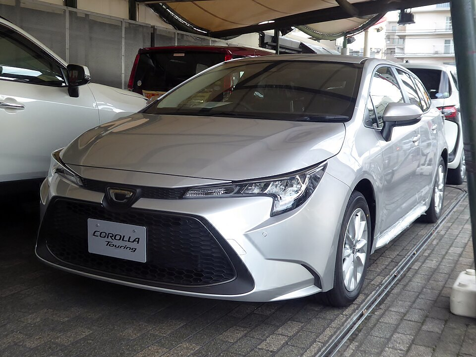
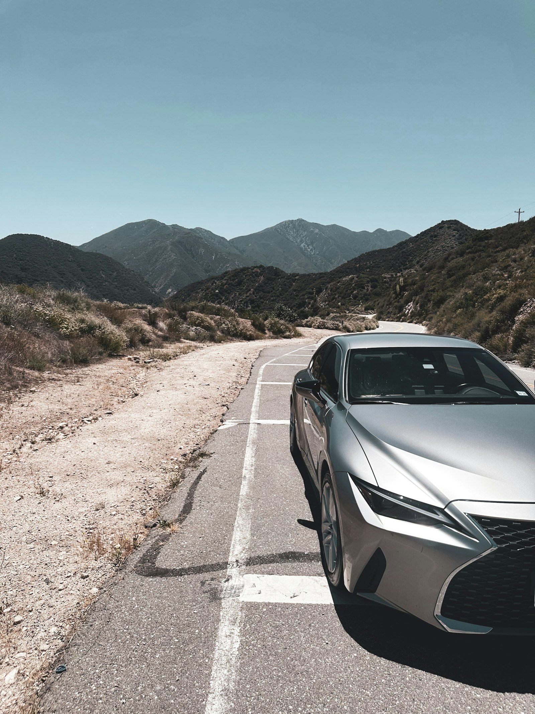
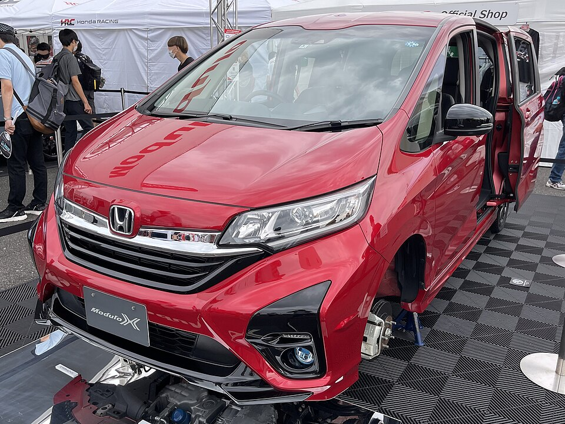
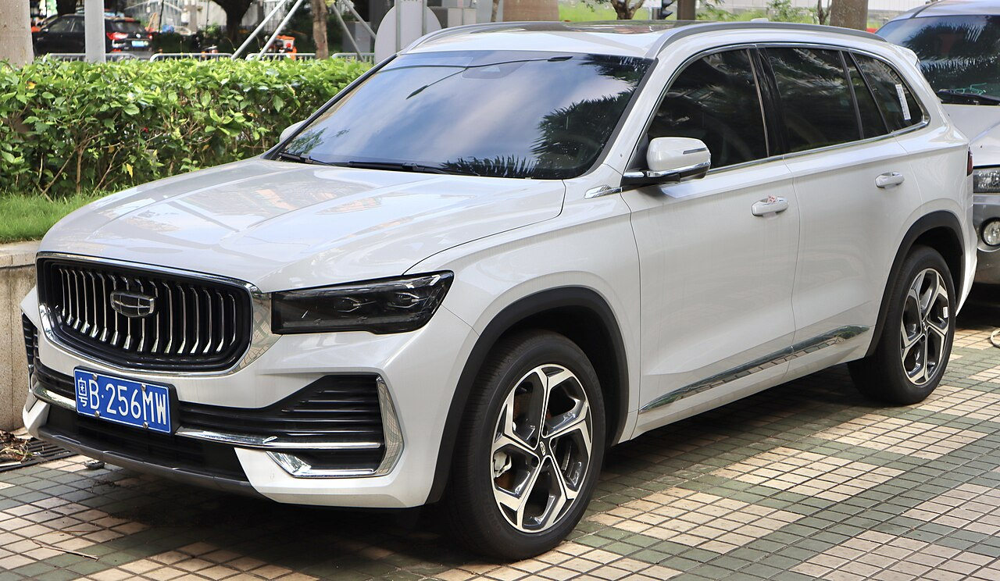
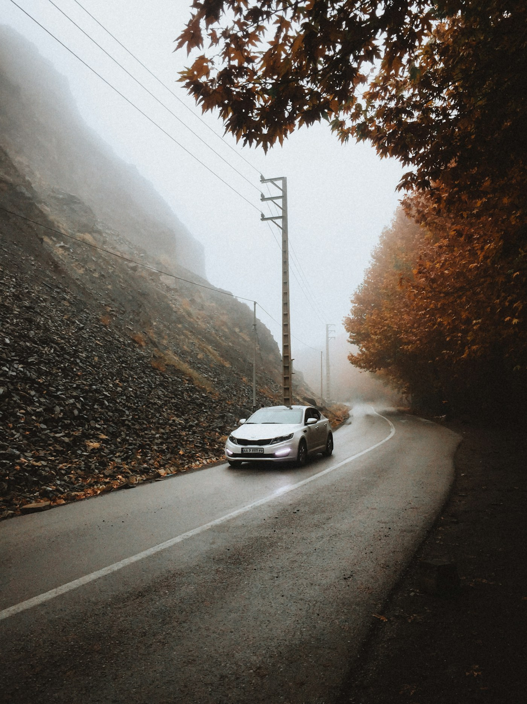

01 / Япония

_front.jpg){kind=link}
Toyota Corolla Touring
Универсал для семьи. При подборе сравниваем комплектации, пробег и состояние кузова по аукционному листу.
Подбор · Покупка · Доставка
Подбираем автомобили в Японии и Китае. Сравниваем варианты, считаем расходы и организуем доставку в ваш город.
Запросить расчёт
Условные цифры
Toyota Corolla Touring, доставка до Владивостока. Суммы придуманы для демонстрации. В реальном расчёте указываются дата и маршрут, а итог зависит от цены покупки, курса и расходов на доставку и оформление.
Что можно искать
Примеры для демонстрации сайта. Модели показывают, с каким запросом можно обратиться за подбором.
01 / Япония

Универсал для семьи. При подборе сравниваем комплектации, пробег и состояние кузова по аукционному листу.
02 / Япония

Компактный минивэн. В запросе важно указать количество мест, желаемый год и требования к салону.
03 / Китай

Кроссовер. При сравнении предложений уточняем комплектацию, состояние и условия покупки у продавца.
От запроса до выдачи
Уточняем модель или класс авто, бюджет и город доставки.
Сравниваем предложения и готовим предварительный расчёт.
После выбора автомобиля обсуждаем условия сделки и способ покупки.
Согласуем маршрут и порядок передачи автомобиля.

Бюджет
Демонстрационные кейсы
Два вымышленных сценария для показа формата. Машины, сроки и результаты ниже приведены для примера.
01 / Япония · аукцион
Запрос. Семейный универсал с просторным багажником.
Выбор. Сравнили два лота по состоянию кузова и комплектации. Выбрали машину с более подробным аукционным листом.
Доставка. До Владивостока, условно 5 недель от покупки.
Посмотреть пример расчёта02 / Китай · продавец
Запрос. Кроссовер для поездок за город с конкретной комплектацией.
Выбор. Сравнили предложения продавцов по комплектации и сроку готовности к отправке.
Доставка. До Новосибирска, условно 7 недель от покупки.
До первого обращения
Да. Начните с бюджета, города и задач. Например, нужен семейный автомобиль с просторным багажником.
Первый расчёт делаем по выбранному варианту и маршруту. Перед покупкой уточняем сумму и отдельно показываем расходы, которые могут измениться.
Способ покупки зависит от страны и конкретного предложения. Сравниваем варианты на аукционе и у продавцов, когда доступны оба пути.
Первый шаг
Расскажите, какую машину ищете, на какой бюджет рассчитываете и в какой город нужна доставка. Если модель ещё не выбрали, укажите класс автомобиля.
_front.jpg){kind=link}
.jpg){kind=link}